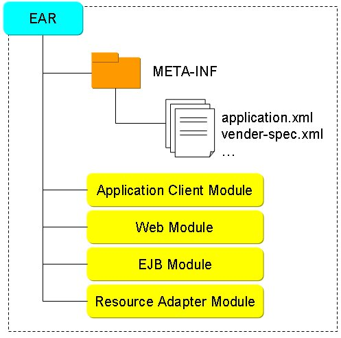
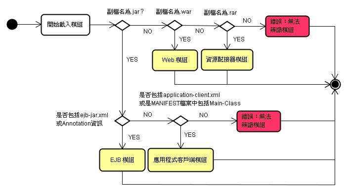
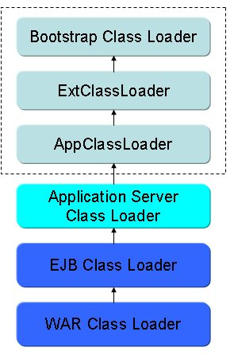

| 一個EAR（Enterprise Archive）是一個標準的JAR（Java Archive）檔案格式，只不過其副檔名為.ear，EAR檔案中包括了部署資訊，以及應用程式所需要的各個模組： 
應用程式客戶端模組（Application Client Module）如同在 使 用 @EJB 注入 Bean（單機客戶端） 看到的客戶端範例，包括了所有客戶端應用程式所必要的類別檔案與部署描述檔（application-client.xml）等資訊，封裝後副檔名為.jar。 Web模組（Web Module）為JSP/Servlet應用程式，包括了Web應用程式所需的類別、部署描述檔（web.xml）等，封裝後的副檔名為.war檔案，架構內容可以參考 關 於 Servlet 容器。 EJB模組（EJB Modlue）為EJB元件，包括了EJB元件所需的類別、部署描述檔（ejb-jar.xml）等，副檔名為.jar，可參考 封裝 EJB-JAR。 資源配接器模組（Resource Adapter Module）包括了所有介面、類別、資源配接器部署描述檔（ra.xml），為JAR格式，副檔名為.rar，實作了特定EIS（Enterprise Information System ）層的連接器架構。 當您使用EAR進行部署時，大致會依以下的流程來判斷模組類型：  Java的類別載入機制，您可以先參考一下 簡 介 ClassLoader 的內容，現在將之延伸至EAR模組的類別載入，基本上就是再加l應用伺服器（Application Server）類別載入器、EJB類別載入器與WAR類別載入器，WAR類別載入器的parent是EJB類別載入器，EJB類別載入器的parent是 應用伺服器類別載入器，而應用伺服器類別載入器的parent為系統（System）類別載入器，又稱之為應用程式類別載入器（App Class Loader）。 
當尋找某個類別時，一樣的會先委託類別載入器的parent先在其所設定之路徑下尋找，一路委託至最上層，若各層parent找不到才交由child類別載入器來尋找。 |